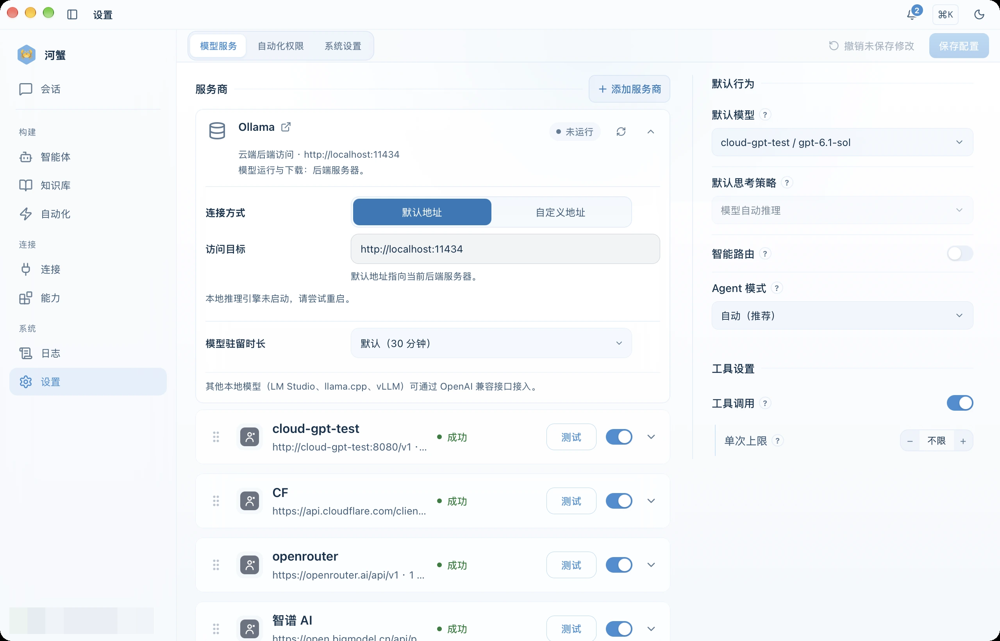

مودېل تەمىنلىگۈچى
AI مۇلازىمەت تەمىنلىگۈچى، مودېل تىزىملىكى، API Key ۋە يەرلىك مودېللارنى باشقۇرۇش.
تەمىنلىگۈچى ۋە ئۇلىنىش سەپلىمىسى
ھېشى AI OpenAI، Anthropic Claude، DeepSeek، Google Gemini، Qwen، Ark / Doubao، Zhipu، Kimi، Baidu Qianfan، Hunyuan، Spark، MiniMax، Ollama ۋە ماس كېلىدىغان خاس API مۇلازىمەتلىرىنى قوللايدۇ.
تەمىنلىگۈچى تۈرىنى تاللىغاندىن كېيىن، ئۇنىڭ نۆۋەتتىكى API ھۆججىتىدىن تولۇق Base URL، API Key ۋە مودېل ID نى تەكشۈرۈڭ. ئەسلى ۋە ماسلاشتۇرۇلغان API ئادرېسى ئوخشىماسلىقى مۇمكىن؛ تور بېكەتنىڭ دامېن نامىلا تولۇق API ئادرېسى ئەمەس. مودېل تىزىملىكى ھېسابات ھوقۇقى، رايون ۋە نۆۋەتتىكى مۇلازىمەتكە باغلىق.
Ark دىكى API Key ۋە مودېل ID
API Key كىملىك دەلىللەش ئۈچۈن ئىشلىتىلىدۇ. ep-... بولسا Endpoint ID بولۇپ، مودېل ئورنىغا يېزىلىدۇ؛ قوللايدىغان Model ID نىمۇ ئىشلىتىشكە بولىدۇ. ئادەتتىكى API ئادرېسى https://ark.cn-beijing.volces.com/api/v3. Ark رەسمىي قوللانمىسىنى كۆرۈڭ.
API Key ساقلاش
يەرلىك ئۈستەلئۈستى مۇلازىمىتىدە Provider نىڭ API Key قىممىتى Sidecar تەرىپىدىن ~/.hexclaw/hexclaw.yaml دا ساقلىنىدۇ؛ مۇندەرىجە ھوقۇقى 0700، ھۆججەت ھوقۇقى 0600. Provider ئاچقۇچى سىستېما ئاچقۇچ زەنجىرى ياكى توركۆرگۈ ساقلىغۇچىغا قوشۇمچە ساقلانمايدۇ. ئۆزىڭىز قۇرغان بۇلۇتقا ئۇلانغاندا شۇ مۇلازىمەتنىڭ Provider سەپلىمىسى ۋە ئاچقۇچى ئىشلىتىلىدۇ؛ يەرلىك سەپلىمە بۇلۇتقا ئاپتوماتىك ماسلاشمايدۇ.
مودېل تاللاش
- تەمىنلىگۈچىنى قوشۇپ، API ئادرېسى ۋە Key نى تەكشۈرۈڭ.
- تاللانغان مودېل بىلەن ئۇلىنىش سىنىقىنى ئىجرا قىلىڭ؛ بۇ تەمىنلىگۈچى نورمىسىنى ئىشلىتىشى مۇمكىن.
textئىقتىدارى بار مودېلنى كۆڭۈلدىكى سۆھبەت مودېلى قىلىڭ.- Agent ياكى ئىش ئېقىمىغا ئايرىم تەمىنلىگۈچى ۋە مودېل بەلگىلىيەلەيسىز.

مودېل ئىقتىدارلىرى
| ئىقتىدار | ئىشلىتىلىشى |
|---|---|
text / code | تېكىست سۆھبىتى ۋە كود ھاسىل قىلىش |
vision | كىرگۈزۈلگەن رەسىمنى چۈشىنىش؛ رەسىم ھاسىل قىلىش بىلەن ئوخشاش ئەمەس |
video | كىرگۈزۈلگەن سىننى چۈشىنىش |
audio | مودېل قوللايدىغان ئاۋاز كىرگۈزۈش ۋە جاۋاب؛ ئاۋازنى تېكىستكە ئايلاندۇرۇش ۋە ئوقۇپ بېرىش ئۈچۈن ماس مۇلازىمەت لازىم |
image_generation | رەسىم ھاسىل قىلىش؛ رەسىم تەھرىرلەش ئۈچۈن ئۇنى قوللايدىغان مودېل ۋە API لازىم |
video_generation | سىن ھاسىل قىلىش ۋە ۋەزىپە ھالىتى ئارقىلىق نەتىجىنى ئېلىش |
embedding | بىلىم ئىزدەش ئۈچۈن vector ھاسىل قىلىش؛ ئادەتتىكى سۆھبەت مودېلى ئەمەس |
ئىقتىدار ھەر بىر مودېلغا ئايرىم بەلگىلىنىدۇ. تىزىملىكتە بار بولۇش، ئىقتىدار باياناتى ۋە بىر قېتىملىق چاقىرىشنىڭ مۇۋەپپەقىيەتلىك بولۇشى ئايرىم نەتىجە. تەپەككۇر ئېچىش-تاقاش ۋە كۈچلۈكلۈك تاللانمىلىرىمۇ كونكرېت مودېلغا باغلىق.
Ollama يەرلىك مودېل
يەرلىك Ollama ئۈچۈن OpenAI ماس API ئادرېسى http://localhost:11434/v1، API Key ئادەتتە بوش قالدۇرۇلىدۇ. مودېلنى ئاۋۋال چۈشۈرۈڭ. مودېل يەرلىكتە ئىجرا بولسىمۇ، تور قورالى ياكى سىرتقى مۇلازىمەت ئىشلىتىلگەن ۋەزىپە پۈتۈنلەي تورسىز بولمايدۇ.
ئاپتوماتىك مودېل تاللاش
ئاپتوماتىك تاللاش كۆڭۈلدىكى مودېل، ۋەزىپە ئىقتىدارى ۋە يوللاش تەڭشىكىگە ئەگىشىدۇ. ماس زاپاس مودېل بار ھەمدە خاتالىق قايتا ئۇلاشقا ماس بولغاندا باشقا تەمىنلىگۈچى ئىشلىتىلىشى مۇمكىن. ئەمەلىي ئىشلىتىلگەن مودېلنى ئىجرا خاتىرىسىدىن كۆرۈڭ؛ سىرتقى مەشغۇلات نەتىجىسى نامەلۇم بولسا قايتا ھاسىل قىلىش ياكى ئەۋەتىشتىن بۇرۇن ئەسلى ۋەزىپىنى تەكشۈرۈڭ.
خاس تەمىنلىگۈچى
OpenAI API فورماتىغا ماس مۇلازىمەتلەر ئۈچۈن تولۇق Base URL، API Key ۋە مودېل ID نى كىرگۈزۈڭ. خاس gateway، ئىچكى proxy ياكى enterprise endpoint نىڭ ئەمەلىي كېلىشىمىگە ماس سەپلىمە ئىشلىتىڭ.